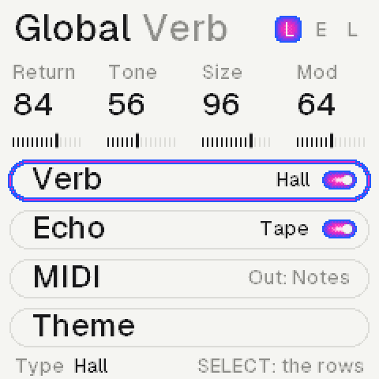

The manual, a page at a time.
Twelve buttons, eight knobs, 27 keys.
Each button opens its page. K1 to K4 turn the four values under them; ALGORITHM the one at the foot. SELECT picks the synth, PRESETS its sound, on every page.
FXEffects: colour, media, motion, space
SELFilter
ENVAmp: the envelope and the level
LFOLFO (drawn; its sound comes later)
EDITSound: which recording, start, loop, tune
GLOGlobal: the reverb, the echo, the theme
HOMEHome: levels, sends, tempo; the scene
ARPChord: the progression, chords on the keys
SEQRoll: this synth's own sequence
SAVEHeld: the songs (saving comes later)
PLAYAll three rolls and the chords, from the top
RECRecords the keys; stopped on Chord, writes chords
OCT− OCT+The keys' octave; with a note held, delete or copy
MASTERThe volume
Tap a page button to open it, again for its next row, hold it for its layer.
On FX and GLO it moves through the rows. Hold the page's button and turn it to change a row's type.
Hold a key on the Roll or a chord on Chord: the knobs change it, OCT− takes it away, OCT+ copies it.



The keys play the synth SELECT picks.
Each synth has its own roll and length (32, 16 and 12 steps in the first song), so the three loop against each other. On the Roll, stopped, a key writes a note at the cursor.
A keyStopped: writes at the cursor, then moves it on
Held + K1Moves the note
Held + K2Its pitch, a scale step at a time
Held + K3Its length; ALGORITHM its velocity
Held + OCT−Deletes it; OCT+ copies it after itself
K1 K2 K3The cursor, the view, the pen's length
K4This synth's length, 1 to 64 steps
PLAYPlays; the keys play along, not written
PLAY + RECRecords the keys from their nearest step
On Chord, a key is a chord.
Each key plays the chord of the song's key built on it: A gives Am7, F gives Fmaj7. PLAY runs the progression: the pad plays it, the piano follows the key, the third synth the root.
ALGORITHMThe progression: 16 presets, then User 1 to 4
Voice rowVoicing, inversion (Auto moves least), spread, strum
Key rowKey, mode, chord length, rhythm (hold, pulse, arp)
SEQ + ALGOHow this synth follows: plays chords, key, chord, root, free
REC, stoppedKeys write chords into the slots, the cursor moving on
Held + K1Moves the chord; K2 its quality, K3 its bars
Held + K4Its bass: the root, or the key's pedal
Held + OCT−Deletes it; OCT+ copies it after itself
ARP + K1The slot cursor
ARP + OCT+Prints the progression into this synth's roll
Four rows a synth, two shared spaces.
On FX and GLO, ALGORITHM moves through the rows; hold FX or GLO and turn it to change the row's effect. Each effect names its own four knobs.
ColourSaturate, crush, lossy (a codec's smear), noise
MediaTape, cassette, VHS
MotionChorus, vibrato, drift
SpaceThe sends to the reverb and the echo, the pan
ReverbRoom, hall, space, haze, bloom, lofi (on GLO)
EchoTape, or grains: a cloud of what you played
FilterLP24, LP12, HP, BP, notch, peak, vowel; hold SEL to change
Sixty-four recordings, built in.
Nothing to load. PRESETS steps through them on any page; Home shows a landscape for the kind of sound: peaks, a lake, a coast or the night.
SoundWhich recording (K1), or PRESETS anywhere
StartWhere it starts: past its attack, for a soft one
LoopFull, or once through
TuneIn semitones; ALGORITHM fine, in cents
LayerA second recording under it (comes later)
The computer plays the panel.
Press Power on first. A knob turns by dragging it up or down, or with the wheel over it; in the screens' section, over a value.
Z to /, S to 'The lower keys, F3 to A4
Q to OThe upper keys, B4 to G5
1 to =The twelve buttons, FX to REC
[ ]OCT− and OCT+
ArrowsUp and down SELECT, left and right ALGORITHM
Shift clickHolds a button down
From the installer page, over USB.
Chrome or Edge on a computer: connect, choose the .fwsc, install. If the screen stays dark, hold OCT− while switching on: a rescue mode the installer works from.
InstallerDemake onto the FM‑1 →
The way backM‑VAVE's own V15, from the same page